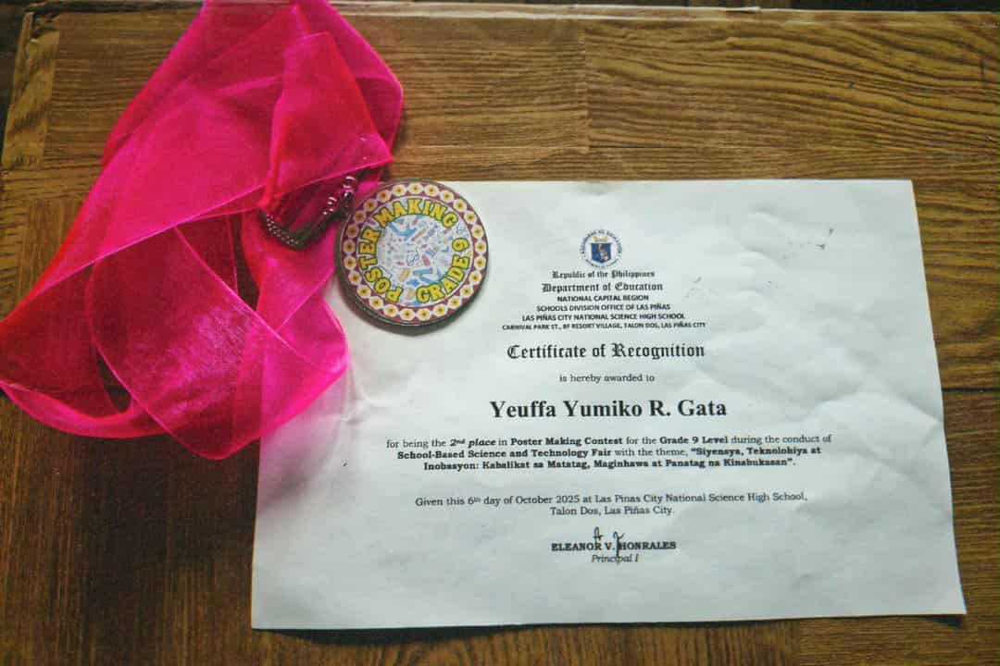
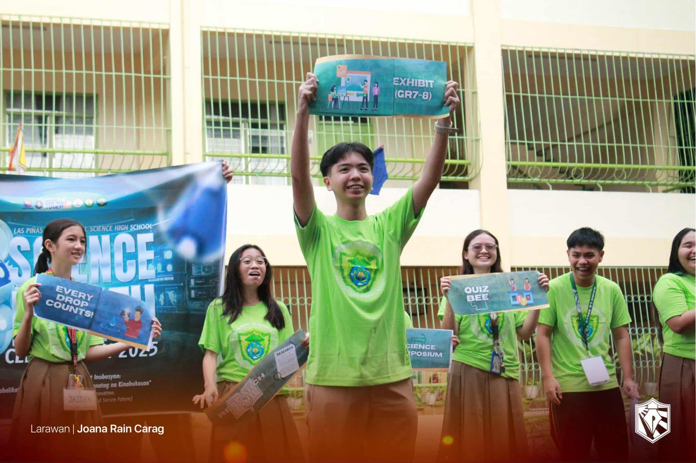

2025-2026
This year’s Science Month celebration taught me that science is not only about facts and experiments but also about creativity, teamwork, and personal growth. I joined the poster-making contest and proudly won 2nd place, which helped me realize that expressing scientific ideas through art is a powerful way to raise awareness. I also actively participated in keeping our classroom clean, and our section, Fidelity, was awarded the Cleanest Classroom. This showed me that teamwork goes beyond academic tasks and includes taking responsibility for our environment. Another key moment was our research title defense, where I learned the importance of preparation, confidence, and believing in our ideas. These experiences helped me discover new strengths and appreciate the different ways we can learn and grow through science.
If I were to teach a classmate about what I learned, I would highlight how Science Month activities go beyond the classroom by encouraging creativity, responsibility, and collaboration. I would explain how joining contests, maintaining cleanliness, and presenting research can all build useful skills for the future. Celebrating Science Month is important because it gives students the chance to explore science in fun and meaningful ways while developing their talents and confidence. In real life, I can apply these lessons by continuing to improve my skills, working well with others, and taking care of my surroundings with the same responsibility we practiced during the event. 🍃🧪✨

